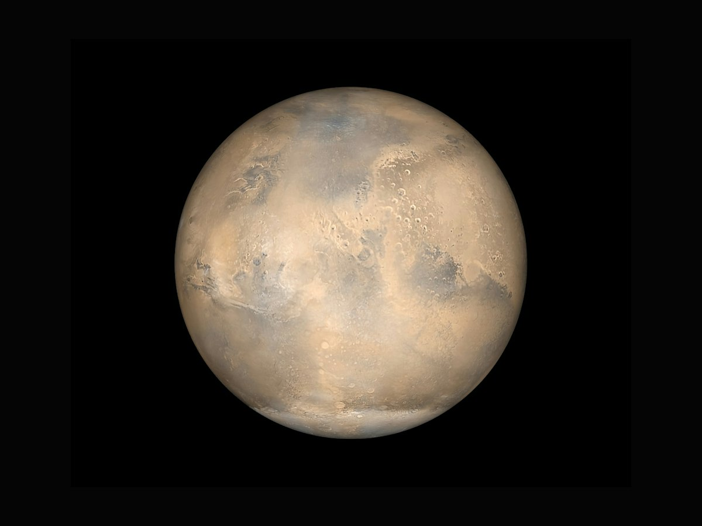
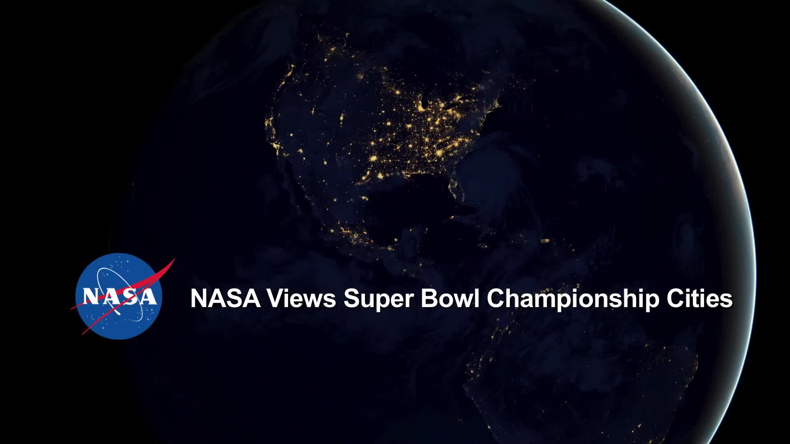
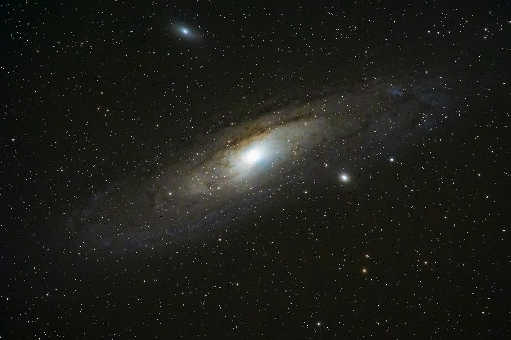
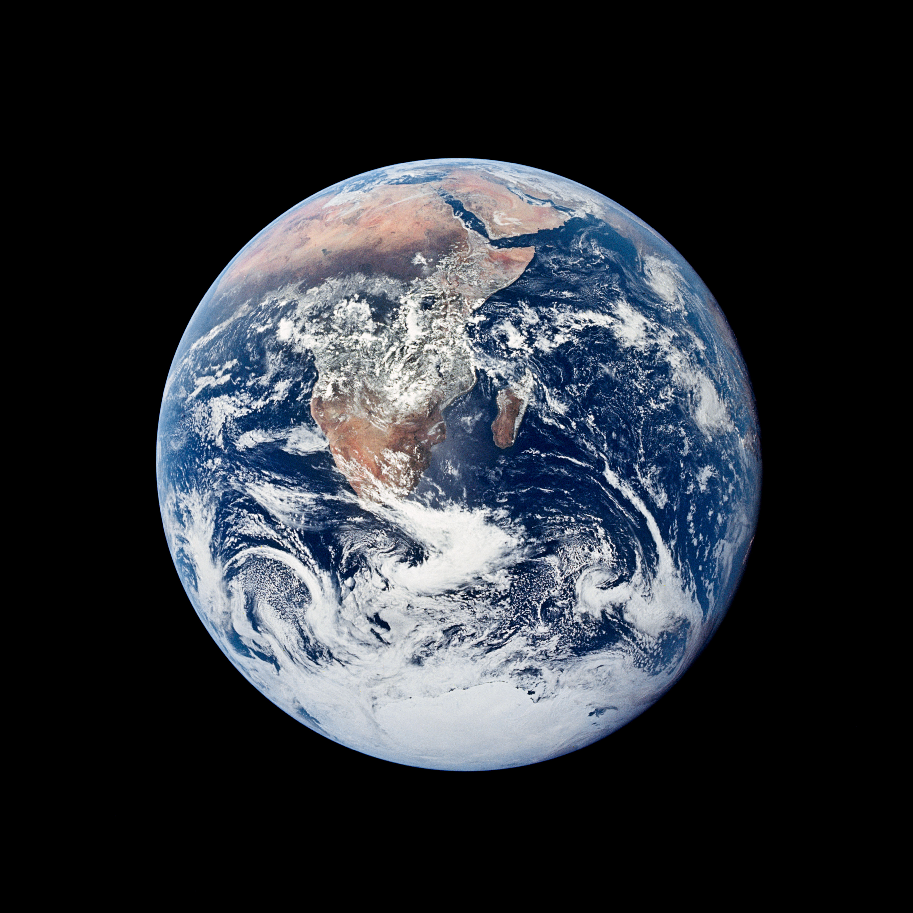

Among the
Stars,
I Found My
Purpose.
Every great mission begins with a dream. Mine is to contribute to India's journey to the cosmos — to train as an astronaut, pioneer computational space science, and leave an indelible mark among the stars for generations that follow.
What Drives Me
Four cornerstones fueling an unrelenting commitment to human spaceflight, astrophysics, and technological independence.

Contribute to ISRO
Advancing human spaceflight, Gaganyaan astronaut training, and India's sovereign orbital presence.

Advance Science
Deciphering deep cosmic mysteries from orbital mechanics to high-energy astrophysical phenomena.

Inspire Others
Empowering students and future engineers across India to believe that the cosmos is within reach.

Build a Legacy
Creating open scientific tools, mathematical models, and knowledge that will outlast generations.
A Life Aimed at the Cosmos
The cosmos is not merely a destination — it is humanity's highest destiny. Every atom in our veins was forged in the thermonuclear hearts of ancient stars.
I am singularly dedicated to serving as an astronaut candidate and computational space researcher at ISRO, contributing to India's human spaceflight program, and creating open-source tools and research that help humanity understand the cosmos.
Standing on Giants' Shoulders
These missions inspire everything I do. India's journey to the stars is living proof that dreams, discipline, and indigenous innovation can reach beyond Earth.
Chandrayaan-3
India's historic soft landing at the lunar south pole (Shiv Shakti Point) — making India the first nation in history to touch down in this unexplored frontier.
Mangalyaan (MOM)
Mars Orbiter Mission. India reached Mars on its maiden attempt at record efficiency — proving world-class interplanetary prowess.
Aditya-L1
India's flagship solar observatory, stationed in a halo orbit at the Sun-Earth L1 Lagrange point 1.5 million kilometers away to study solar storms and coronal mass ejections.
Gaganyaan
India's sovereign human spaceflight mission — sending Indian Vyomanauts into a 400 km Low Earth Orbit aboard the human-rated LVM3 launch vehicle.
Bharatiya Antariksh Station
India's sovereign modular space station in Low Earth Orbit, establishing permanent scientific research, microgravity manufacturing, and deep-space staging capabilities.
Chandrayaan-4 & Shukrayaan
Lunar sample return architecture and India's maiden orbiter to Venus to pierce its dense atmosphere and study planetary runaway greenhouse evolution.
A Star That Burns Bright
I am Vaibhav R. — a space science enthusiast, coder, researcher, and aspiring ISRO astronaut. The universe has always been my greatest obsession; from the mathematical beauty of black hole horizons and general relativity to the raw engineering triumph of rocket propulsion and orbital mechanics.
I am dedicated to dedicating every ounce of passion, intellectual curiosity, and energy to contribute meaningfully to India's space program and humanity's journey to the stars.
"The cosmos is within us. We are made of star-stuff. We are a way for the universe to know itself."
Cosmic Wishlist
Milestones defined by a relentless hunger for discovery, contribution, and pushing human limits.
Contribute to an ISRO Mission & Fly to Orbit
To earn the silver wings of an Indian Vyomanaut, undergo rigorous astronaut training, and contribute to orbital operations, microgravity science, and India's Gaganyaan and space station programs.
Publish a Scientific Paper
Author and co-author peer-reviewed research in computational astrophysics and trajectory optimization algorithms for interplanetary transfer orbits.
Speak at a Science Conference
Present papers and keynote lectures at national and global space symposiums to advocate for open space science and inspire young scientists.
Build Open-Source Astrodynamics Engine
Create an open, accessible numerical orbital integration and satellite telemetry engine for students and researchers across India.
Ignite 100,000+ Young Dreamers
Demonstrate through action that no dream is too grand, and that curiosity and devotion can take anyone from anywhere all the way to the stars.
Listen to the Universe
Space agencies transform electromagnetic and gravitational waves into sound. Explore our real-time Web Audio cosmic sonification synthesizer and live telemetry spectrometer.
Gaganyaan Launch Simulator
Test the flight envelope of India's LVM3 crew launch vehicle from Sriharikota to 400 km Low Earth Orbit.
Connect with Vaibhav
Based in India. Always eager to connect with scientists, aerospace engineers, researchers, and fellow space enthusiasts.